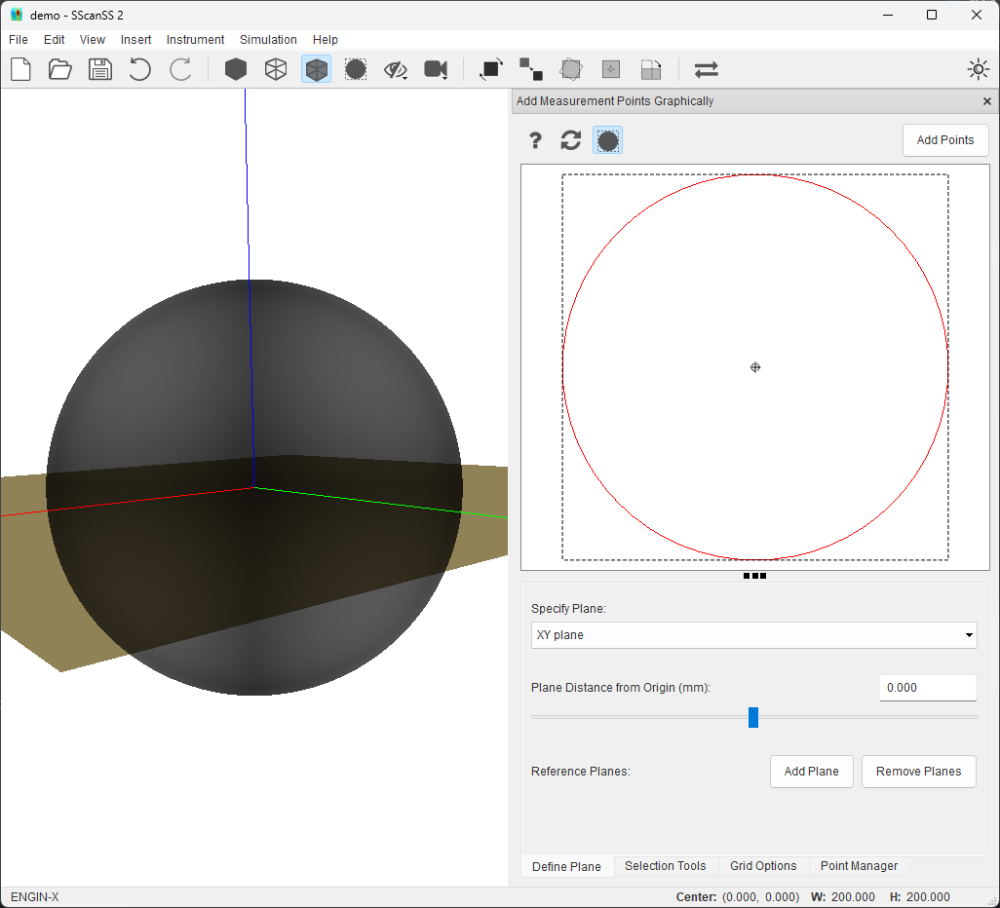
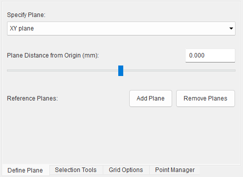

Insert Measurement Points¶
Measurement points may be imported from a file, typed in, or selected graphically. The measurement points are rendered as stars in the graphics window.
Loading measurement points from file¶
To import a Measurement file (.measurement), Go to Insert > Measurement Points > File…, browse to the location of the file and select it.
Key-in measurement points¶
Click Insert > Measurement Points > Key-In and type in the X, Y, and Z values of the measurement points and click Add Fiducial Point button. The measurement point should be displayed in the graphics window
{kind=link}
Graphical selection of measurement point¶
The graphical selection window can be used to select measurement points on a cross-section of the sample. To graphically add measurement points, click Insert > Measurement Points > Graphical Selection. The graphical selection window consists of two sections: a graphics view (top) and a control panel (bottom) which contains a few tabs. The cross-sectional plane is shown in the 3D graphics window when the graphical selection window is opened and removed when the window is closed.
{kind=link}
Graphics view¶
The 2D path from the cross-section of a plane with the sample is shown in the graphic view. Measurement points on the cross-section plane will be also be shown. Above the graphics view is a tool bar with a few buttons:
The Add Points button inserts points that have been placed in the graphics view into the project.
The
 button resets the graphic view’s camera.
button resets the graphic view’s camera.The button shows useful interaction shortcuts for the graphics view.
{kind=link}

The following interactions are possible on the graphics view
Shortcut |
Action |
|---|---|
Right Mouse Click |
Rotate View |
Ctrl + Right Mouse Click |
Pan or Move View |
Middle Mouse Click |
Pan or Move View |
Mouse Scroll Wheel |
Zoom in or out View |
+ / - |
Zoom in or out View |
Delete |
Delete selected points |
Ctrl + R |
Reset View |
The X, Y, Z position of the mouse in the graphics view is shown in real-time in the status bar.
Plane definition¶
The Define Plane tab provides options to change the orientation and position of the cross-sectional plane.
{kind=link}
The orientation of the plane can be adjusted by changing the plane normal from the specify plane dropdown. The plane normal could be a predefined axis-aligned normal or a custom normal. Selecting Custom Normal from dropdown reveals input boxes for the X, Y, Z values of the normal.
{kind=link}
The position of the plane along the normal can be adjusted using the provided slider or textbox. Imprecise movement can be done with the slider and precise adjustment can be made with the textbox. The cross section in the graphics view is updated as soon as slider is released. Also with the textbox the plane is moved in real-time and the cross section is updated as soon as the Enter key is pressed.
Tip
Unsaved points inserted into the graphics view will be removed when the plane is changed. Click the Add Points button to insert the points into the project before changing the plane.
Point selection¶
The Selection Tools tab contains four point selection buttons. The active tool changes the behaviour of the Left Mouse Click but the zoom, pan and rotate shortcuts continue to work irrespective of the active tool.
The point tool allows a single point to be selected by clicking on the graphics view.
The line tool inserts evenly spaced points between a start and end position on a line. Clicking the tool reveals an input box in which the number of points required can be specified. When active, a line can be drawn by clicking and dragging from a start to end position in the graphics view and on completion the line is immediately replaced with the required points. The start and end positions are always included in the generated point set.
{kind=link}
{kind=link}

The area tool inserts evenly spaced points along the x and y axis of a rectangle defined by the start and end position on the graphics view. Clicking the tool reveals two input boxes in which the number of points required in the x and y directions can be specified. When active, as with the line tool, the rectangle an be drawn by clicking and dragging from a start to end position in the graphics view and on completion the rectangle is instantly replaced with the required points.
{kind=link}

The select tool
 allows selection of individual points in the graphics view or multiple points using
CTRL + Left Click or by dragging with the Left Mouse. The selected points can moved by dragging or deleted by
pressing the delete key.
allows selection of individual points in the graphics view or multiple points using
CTRL + Left Click or by dragging with the Left Mouse. The selected points can moved by dragging or deleted by
pressing the delete key.
Note
Measurement points that have been added to the project cannot be moved or deleted in the graphics view, these points are fixed and would have a different colour (red) from the non-fixed point (black). The fixed points can be adjusted from the point manager, hovering the mouse over a fixed point will show the point’s index in a tooltip.
Grid options¶
The Grid option tab has two options. The Show Grid overlays a grid on the graphics view to help with precision point selection while Snap Selection to Grid snaps the selected points to the closest grid intersection.
{kind=link}
When the show grid option is selected, input boxes for grid type and size are revealed. The grid can be either a Box (rectangular) or Polar type. The Box grid requires size in mm for the X and Y axis of the grid while the Polar grid requires radius in mm and angle in degrees. The grid remains fixed when the cross-section is rotated or panned but will zoom with cross-section to maintain scale.
The snap selection to grid option is only enabled when the show grid option is selected. When snap selection to grid option is selected, the selected points are placed at the nearest grid intersection.
Note
For line and area selection tools, only the start and end positions will be snapped to the grid, and the other points will be generated in between the new start and stop positions.
Point manager¶
The Point Manager tab shows all measurement points added to the project. It allows us to reorder, delete, edit, and disable measurement points.
{kind=link}
Manage measurement points¶
Measurement points can be viewed and managed via the point manager. The point manager will be opened when measurement points are added (for graphical selection use the Point Manager tab), if the point manager is closed it can be opened by selecting View > Other Windows > Measurement Points in the menu. Operations for measurement points are similar to Manage fiducial points.
Export measurement points¶
The measurement points can be exported from project file to a Measurement file (.measurement). Click File > Export… > Measurement Points in the main menu, navigate to the desired save location in the file dialog, enter a name for the file and press the Save button.